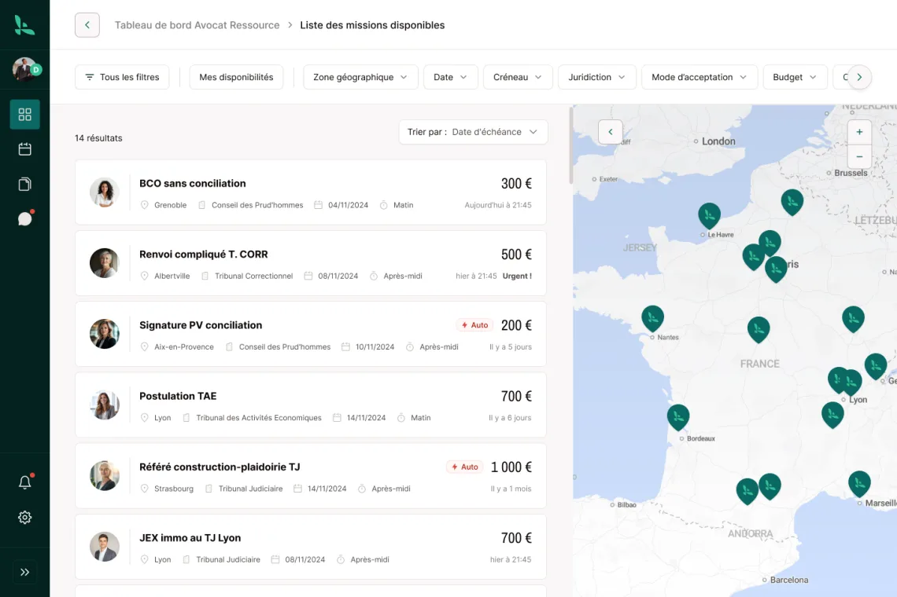
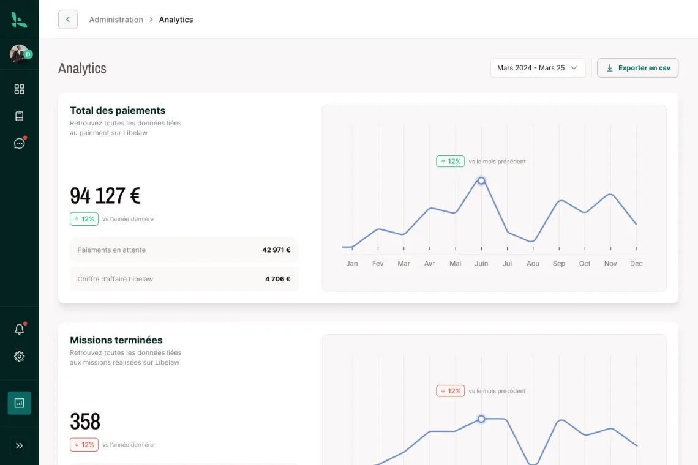

Libélaw met en relation un avocat qui ne peut pas se rendre à une audience avec un confrère proche du tribunal. Akago conçoit et développe la plateforme depuis fin 2024 : web, iOS et Android en Flutter, API AdonisJS, paiement de place de marché avec Stripe Connect. Lancée en avril 2025, elle réunit 4 500 avocats, a organisé plus de 3 000 missions et a reçu le prix spécial du jury du Conseil national des barreaux.
Le contexte
Quand un avocat ne peut pas assister à une audience, faute de temps ou parce que la juridiction est loin, il se fait remplacer par un confrère : c'est la substitution, ou la postulation lorsque la procédure impose un avocat du barreau local. Trouver ce confrère, c'était jusque-là des appels en cascade, des e-mails sans réponse, parfois des heures de train pour quelques minutes d'audience. Autant de temps facturable perdu, sans garantie de trouver quelqu'un à temps.
Libélaw, startup lyonnaise de la LegalTech, a imaginé une place de marché de confiance réservée aux avocats : on y publie un besoin, on fixe sa rémunération, et la plateforme s'occupe du reste. Elle l'a conçue avec 250 avocats pilotes. Notre rôle, depuis fin 2024 : concevoir et développer cette plateforme avec son équipe, sur le web et sur mobile.
La difficulté tient en une phrase : chaque mission engage la responsabilité d'un avocat et de l'argent entre confrères. Le parcours de publication devait être très rapide, la mise en relation fiable, et le paiement irréprochable.
Ce que nous avons développé
Publier une mission en moins d'une minute
Un assistant pas à pas guide l'avocat : type de mission (postulation, substitution ou vacation), juridiction, date, consignes, rémunération. Le paiement est enregistré dès la création, ce qui engage les deux parties. Libélaw annonce 55 secondes pour publier une mission.
Une mise en relation géolocalisée
Dès qu'une mission est publiée, les avocats sont alertés selon leur profil et leur distance au tribunal. Une carte affiche les missions disponibles, juridiction par juridiction.
Une messagerie par mission
Chaque mission a son fil d'échanges : candidatures, acceptation ou refus, réattribution à un collègue du cabinet, pièces jointes. Les notifications push et les e-mails tiennent chacun informé sans avoir à ouvrir la plateforme.
Le paiement d'une vraie place de marché
Le paiement repose sur Stripe Connect : l'avocat qui publie paie à la création, les honoraires sont reversés à celui qui intervient, par carte ou par virement, avec paiement différé. Les factures PDF sont générées automatiquement. Nous avons aussi étudié et chiffré le passage à la facture électronique (format Factur-X), pour anticiper sa généralisation.
Un espace cabinet et un back-office
Un cabinet peut inviter ses collaborateurs, partager ses disponibilités au calendrier et suivre son activité dans des tableaux de bord. Côté Libélaw, un back-office d'administration donne les statistiques de la plateforme.


Une app mobile native
Depuis juillet 2026, Libélaw existe aussi en application native iOS et Android. Elle n'a pas demandé de nouveau projet : elle sort de la même base de code que la version web.
Architecture et choix techniques
| Composant | Technologie |
|---|---|
| Application web, iOS et Android | Flutter, une seule base de code, sur notre socle de composants maison |
| API | AdonisJS (Node.js, TypeScript) |
| Base de données | PostgreSQL, tâches de fond avec pg-boss |
| Paiement | Stripe Connect |
| Notifications | Firebase Cloud Messaging et e-mails transactionnels |
| Documents | Factures PDF générées côté serveur |
| Hébergement | Conteneurs Docker ; environnements de développement, de recette et de production ; données hébergées en France |
| Suivi | Sentry, pour les erreurs en production |
Pourquoi Flutter. Les avocats travaillent au cabinet sur ordinateur et au tribunal sur téléphone. Une base de code unique garantit le même produit partout, et a permis d'ajouter l'app native en 2026 sans repartir de zéro.
Pourquoi AdonisJS. Un framework TypeScript structuré, avec ce qu'une place de marché demande dès le départ : authentification, validation, files de tâches, e-mails. On livre vite sans bricoler les fondations.
Des performances suivies dans la durée. En 2026, nous avons revu le rafraîchissement de la messagerie : une mise à jour toutes les 15 secondes et immédiatement après chaque action, au lieu d'un rechargement quasi permanent. Résultat : vingt fois moins de requêtes, sans perte de réactivité puisque chaque action recharge aussitôt la conversation.
Chiffres clés
| Indicateur | Valeur |
|---|---|
| Collaboration | Depuis novembre 2024, en cours |
| Mise en production | Mars 2025, lancement public en avril 2025 |
| Avocats référencés | 4 500 |
| Missions organisées | Plus de 3 000, avec 100 % de réussite revendiquée |
| Barreaux couverts | 164 |
| Plateformes | Web, iOS, Android |
| Distinctions | Prix spécial du jury au Prix des incubateurs du CNB ; 1er prix du concours de pitch Lyon Start-up 2024 |
| Financement | Bourse French Tech (notre guide) |
Chiffres d'usage publiés par Libélaw (octobre 2026). Distinctions : Conseil national des barreaux, Lyon Capitale.
Ce que ce projet illustre
Une place de marché, c'est d'abord un paiement
La mise en relation est la partie visible. La confiance, elle, se joue sur l'argent : qui paie, quand, qui reçoit, et quelle facture en sort. Nous avons intégré Stripe Connect dès les premières versions plutôt que de l'ajouter après coup.
On construit avec les utilisateurs, pas pour eux
Libélaw a conçu sa plateforme avec 250 avocats pilotes. De notre côté, des sprints courts et des démos régulières : chaque parcours est confronté à la pratique réelle avant d'être figé.
Une base de code, trois plateformes
Le choix de Flutter au départ a permis d'ajouter l'app native plus tard, sans recommencer. C'est toute la différence entre une évolution et un nouveau projet, et donc entre deux budgets.
Ils le disent mieux que nous
« Ça fait 2 ans qu'on bosse avec la team Akago : livraison en avance, features bonus et exigence qualité au top. 💪 Une équipe qui n'a pas peur des sprints et qui délivre, foncez ! 🚀 »
Maxence Laurent · CEO, Libélaw
Un projet similaire ? Place de marché métier, mise en relation de professionnels, paiement entre utilisateurs, workflows de validation : ce sont des briques que nous maîtrisons (notre offre SaaS). Parlez-nous du vôtre.
Contactez-nous directement← Retour à la présentation du projet Libélaw · Toutes nos réalisations